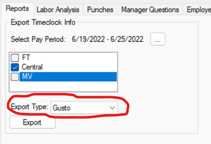
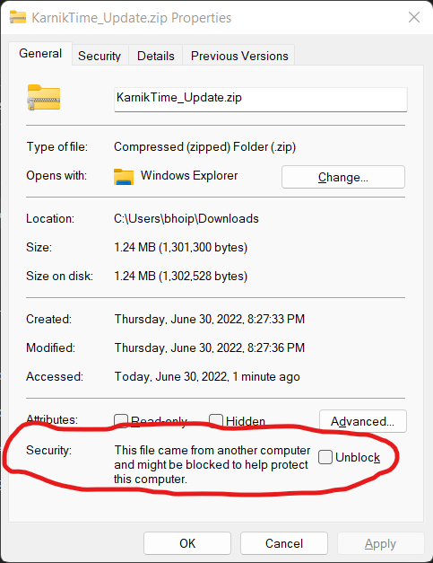
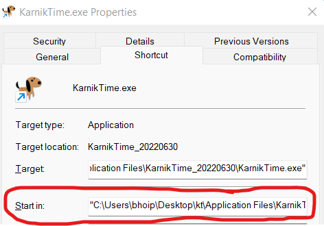

Karnik Time
Update 6/30/2022
What’s New
Gusto Payroll Import
Weekly Pay Period
- Added support for “Weekly” pay period
- Weekly pay period runs from Sunday through Saturday.
- Bi-Weekly pay periods are still supported.
- When switching between pay periods salaries will be automatically adjusted appropriately.
Installation
- Download zip file from https://hoipkemier.com/KarnikTime/KarnikTime_Update_20220630.zip
- Unblock the zip security.
- Right click on the zip file, and select properties.
- Check the “Unblock” checkbox.
- Click Ok to save changes.
- 
- Extract files to a temporary location.
- Locate the directory of the current executable.
- Right click on the Karnik Time Shortcut.
- Click on properties.
- Take note of the Start In directory.
- Copy the files from the zip to the “Start in” directory.
- Overwrite any files when prompted.
NOTE: Do not delete all the files in the target directory. There are several configuration files that will not be replaced, and will remain from the previous installation.